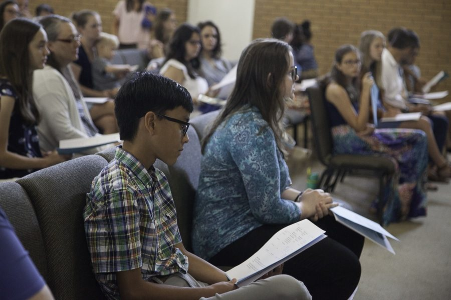
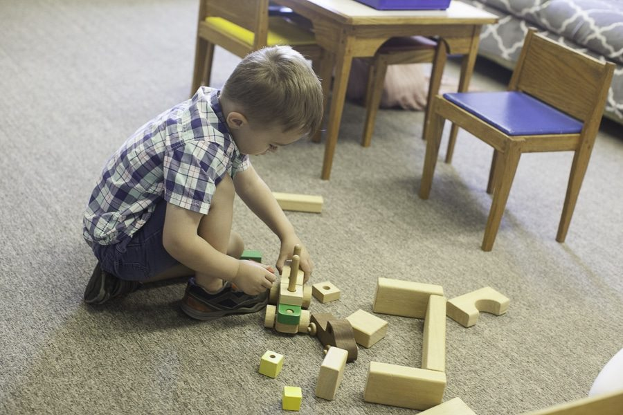
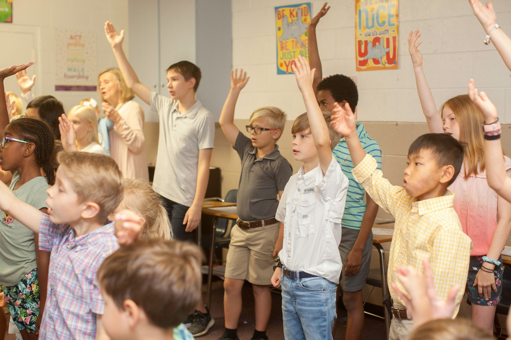
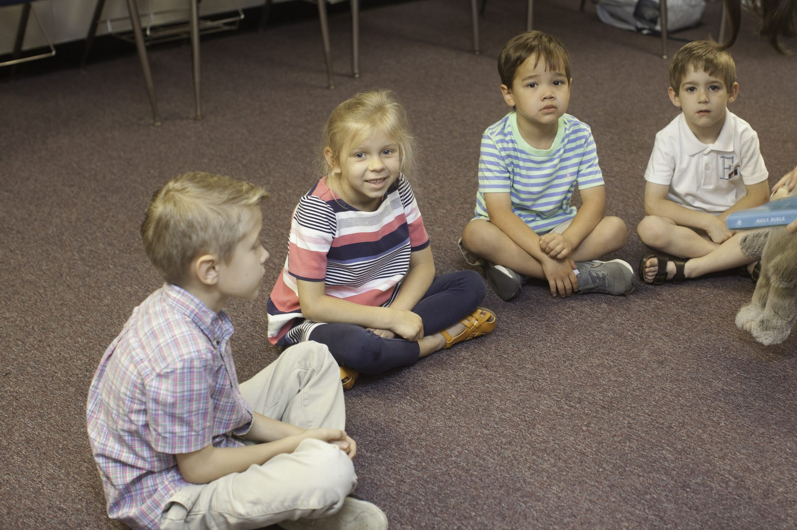

Ministries · Hope Kids
Hope Kids
We love kids and want to give them a big view of God.

A Big View of God
At Hope Kids we love kids and want to give them a big view of God, sow the seeds of His Word in their hearts, and invest in their relationship with Jesus and His church. Our goal is that the children's teachers at Hope Kids would come alongside parents as they “tell the coming generation the glorious deeds of the LORD, and His might, and the wonders that He has done” so that “they should set their hope in God and not forget the works of God, but keep His commandments.” (Psalm 78).
Easy Check-In, Safe Care
Check-In
When you arrive at Hope Kids, you'll fill out a registration card to receive a check-in tag and security stickers. When it's time to pick up your child, just present your portion of the sticker to the Hope Kids volunteer. If your child needs you during the worship service, we'll text you.
Nursery & Snacks
During the worship service, we provide a nursery for babies through three-year-olds. We provide a gluten-free snack for all children.
Safety First
We value your child's safety. Before joining Hope Kids, every prospective volunteer completes a thorough application that consists of a background check and character references.

Sunday School at 9AM
Sunday School for kids and youth starts at 9AM during the school calendar year. Kids over four are encouraged to participate in the 10:15 worship service with their parents.

Every Child Is Welcome
We would love to partner with you in ministering to your child. We want to do everything we can to serve any child who would benefit from additional support. If your child could use a little extra help during the service, please contact us here or let a Hope Kids volunteer know on Sunday morning.
Join the Hope Kids Team
Leave us your contact info and Sarah Payne, our volunteer coordinator, will get in touch with you!